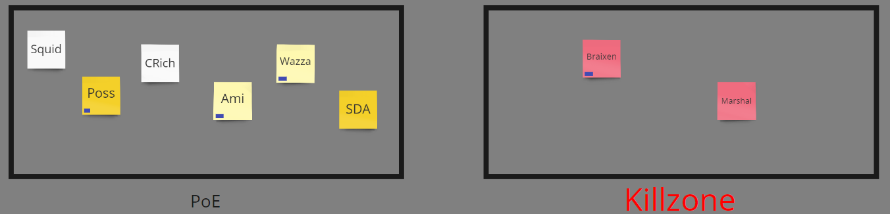

wait /unvote
we gotta think smn thru

wait /unvote
we gotta think smn thru
No, not really. You’d just look like you cashed in on a pre-made lynch for towncred. You wouldn’t look bad, but you wouldn’t look good.
Napoleon will either look like Scorned or Noble.
| Votee | Voted by | Votes |
|---|---|---|
| Braixen | Alice, Drybones, Crichard, Wazza | 4/9 |
| folaccount | Vulgard, Possessed | 2/9 |
| Ami | Squid, EVO | 2/9 |
| Possessed | folaccount | 1/9 |
| Napoleon | sirderpalot | 1/9 |
| Crichard | Braixen | 1/9 |
Honestly, I kinda prefer not lynching Ami.
I know it’s strange that I just thought about that and I was the one who created the damn push just then but I feel like it’s best to not kill them.
As long as it’s someone within these groups, I am okay lynching, but I do have preferences; and an Ami lynch, if bountied, is pretty valuable

Sort of just Bitching about his role which can be seen as towncred? I think that at this level I can be seen as scum trying to build towncred by complaining about their role. I’ve done this multiple times and it works quite well.
He never actually bled me. So this is a contradictory statement, if you didn’t know I claimed hunter.
The fact that he refuses to bleed anyone makes me think that he is NK. My current theory as to why Katze died was due to Demon
I think Wazza used Haemophilia d1 which is why he was adamant about not bleeding anyone, this would also explain the reason as to why Katze died.
Very weird statement here, seems to be isolated from the game as to try to not make any allegiances or to make any enemies.
Continueing to threaten people without actually backing it up with anything.
Very weird post in reference to a conversation that you should look at. Marshal was discussing the possibility of it being a cult game and Wazza immediately shut it down.
Very weird when I said that I town read him, he undermined it with the fact that he is always aggressive, this is the reason why I am so conflicted between Wazza either being openwolf or towncore.
Refussing to bleed marshal is really weird.
Even more weird how he choices not to bleed marshal and to instead vote him.
Adamently claiming to not want to bleed marshal.
Go back to his previous statement when he claimed to bleed anyone who ccs hunter, this, he of course, did not do.
I never claimed hunter was unique, and me claiming that I thought hunter had retri was a way to make scum unable to guess my class, something I was adamant about until I was pressured to claim.
He finally claims to want to bleed someone, yet he finds an excuse to not do it anyway
This is the excuse I was talking about.
Finally back off on bleeding, though this entire argument was completely drawn out which makes me susp of him.
Even if ami was bountied there is still a high chance of them being town, why would we mislynch for the purpose of gaining another lynch at the cost of a high chance of a villager?
Out of the conversation tho it is hilarious XO
If Alice dies tonight that is even more suspicious as he is delaying the action to later on in the day.
This seems like a really high bluff.
Don’t tell me you’re Zone 2.0 and you’re holding grudges aaaaa
Yeah I wasn’t sold on Ami being lynched today. You notice I wasn’t voting her? Easy I was trying to tell you the flaw in that plan as I wasn’t voting Ami.
Zone 2.0?
Napoleon is heavily TR. So is Vulgard and Drybones is too. I wouldn’t advocate for lynches on my town reads even if I’m wrong about them.
zoneq11, a player known to hold grudges and go out of his way to ensure someone he doesn’t like has as unfun of a game as possible
As I said before. Even if I wanted to shoot Wazza, Drybones will see to it that my night action is prevented anyway
bro just b/c marshal came in (already scummy) and ultra defended someone who scumslipped doesnt nullify the majority of Braix’s shitty posts. I take it into consideration, and marshal’s claim only makes him look a little better
Wazza and CRichard are my best candidates for NK. I don’t think either of them are group scum
ok but besides that
he pings me as villager
he has made a lot of posts from a villa mindset, and I also personally can see his mindset and way he’s posting from, and why he has posted certian posts. I think he is villa
thanks
first, what are the odds of a demon existing in this game and wazza being exactly it?
second, why does an anti town with a bleed refuse to use it?
Like his actions make sense when u try to… for lack of a better word, empathise. Like in his shoes and looking at him as a player, i could honestly see him villa.
oh my gosh I know (of) this player